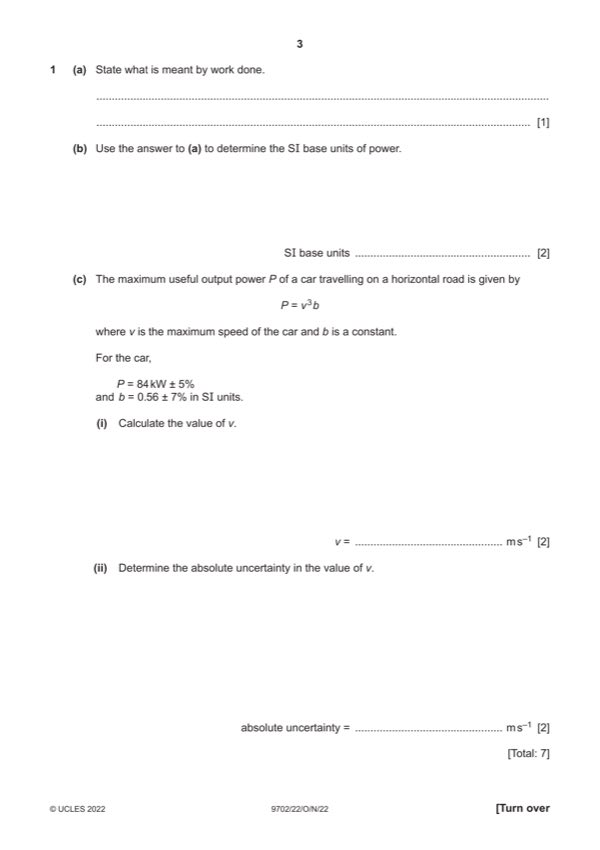

Question 1

Original paper page 3
Part 1(a) — solution
- [B1] Obtain/use: force displacement in the direction of the force
Mark points
- [B1] Obtain/use: force displacement in the direction of the force
Part 1(b) — solution
- [A1] Obtain/use: = kg m2 s–3
Mark points
- [A1] Obtain/use: = kg m2 s–3
Part 1(c)(i) — solution
- [A1] Obtain/use: v = 53 m s–1
Mark points
- [A1] Obtain/use: v = 53 m s–1
Part 1(c)(ii) — solution
- [A1] Obtain/use: absolute uncertainty = 0.04 53
Mark points
- [A1] Obtain/use: absolute uncertainty = 0.04 53